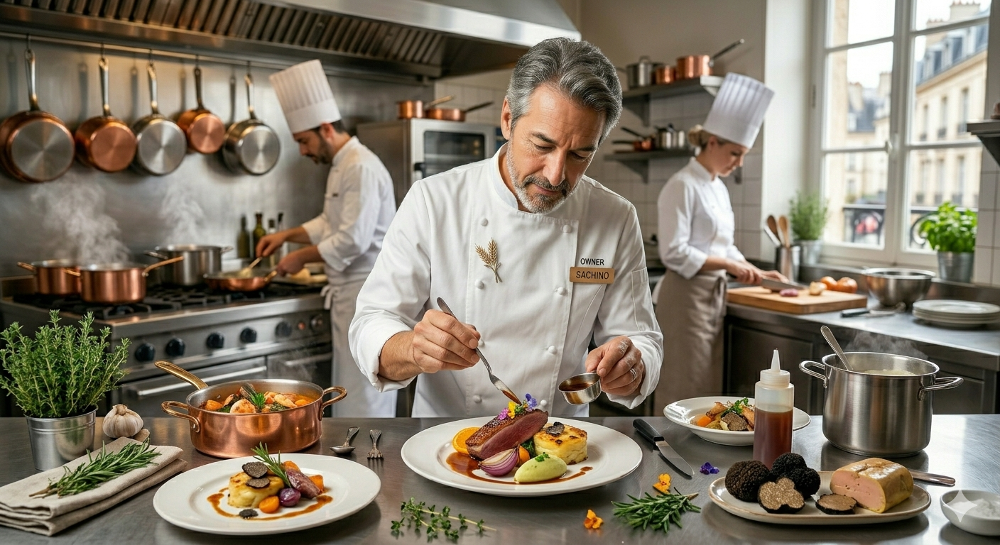

Depuis 2011
Brothers' Story
兄は料理を、弟は菓子を。
兄は料理を、弟は菓子を。
母は土を耕す。
仙台で生まれ育った兄弟。兄・啓一郎はフランス料理の力強さに魅せられ、弟・栞司は家族のために作るケーキの喜びに目覚めました。
本場フランスで別々に研鑽を積んだ二人が、再びこの地で手を取り合ったのは「家族の絆」を形にするため。母が育てる有機野菜を主役に据えた彼らの料理には、技術だけではない、深い愛が宿っています。
Keiichiro Tsuji
Chef de cuisine
Eiji Tsuji
Chef Patissier